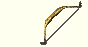

| Name | Resources | Skillmake | |
|---|---|---|---|
 | bow | 7 log | 30.0 Bowcraft |
 | Composite Bow | 7 log | 70.0 Bowcraft |
 | crossbow | 7 log | 60.0 Bowcraft |
|  | Elven Composite Longbow | 20 log | 95.0 Bowcraft |
| heavy crossbow | 10 log | 80.0 Bowcraft | |
| Magical Shortbow | 15 log | 85.0 Bowcraft | |
 | Repeating Crossbow | 10 log | 90.0 Bowcraft |
 | Yumi | 10 log | 90.0 Bowcraft |
 | Blight Gripped Longbow | 20 log 10 Blight 10 Corruption 1 Lard of Paroxysmus | 75.0 Bowcraft |
| Faerie Fire | 20 log 10 Blight 10 Corruption 1 Lard of Paroxysmus | 75.0 Bowcraft | |
 | Faerie Fire | 20 log 10 Muculent 10 Scourge 1 Lard of Paroxysmus | 75.0 Bowcraft |
 | Mischief Maker | 15 log 10 Corruption 10 Putrefaction 1 Dread Horn Mane | 75.0 Bowcraft |
 | The Night Reaper | 10 log 10 Blight 10 Scourge 1 Dread Horn Mane | 75.0 Bowcraft |
| Barbed Longbow | 20 log 1 Fire Ruby | 95.0 Bowcraft | |
| Slayer Longbow | 20 log 1 Brilliant Amber | 70.0 Bowcraft | |
| Frozen Longbow | 20 log 1 Turquoise | 70.0 Bowcraft | |
| Longbow of Might | 20 log 1 Blue Diamond | 70.0 Bowcraft | |
| Ranger's Shortbow | 15 log 1 Perfect Emerald | 70.0 Bowcraft | |
| Lightweight Shortbow | 15 log 1 White Pearl | 70.0 Bowcraft | |
| Mystical Shortbow | 15 log 1 Ecru Citrine | 70.0 Bowcraft | |
| Assassin's Shortbow | 15 log 1 Dark Sapphire | 70.0 Bowcraft |